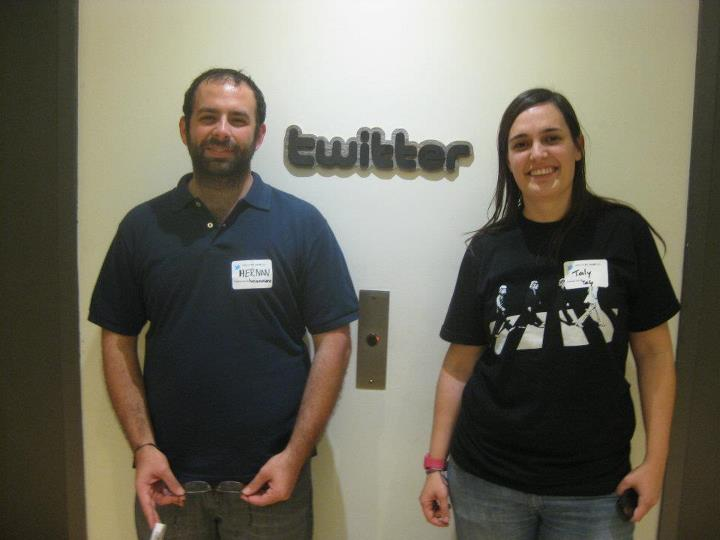

Fluent conference
Javascript & beyond
Javascript & beyond
http://www.flickr.com/photos/robvucic/7071287701/
The highlights
http://www.flickr.com/photos/23200522@N03/2545131283/
Steve Souders, Google
A single point of failure (SPOF) is a part of a system that, if it fails, will stop the entire system from working.
<script src='script.js'> = SPOF72.66.115.13 ajax.googleapis.com 72.66.115.13 apis.google.com 72.66.115.13 www.google-analytics.com 72.66.115.13 connect.facebook.net 72.66.115.13 platform.twitter.com
Long cache times reduce the probability of FrontEnd SPOFs...
but short cache times is the only way snippets owners can push updates.
But it's not the only way.
He came up a technique: Self updating scripts
http://www.flickr.com/photos/jesse757/3389113553/
James Pierce, Facebook
Device APIs:
Client-side APIs that let's us interact with the device hardware.
What does it mean?
We can make applications that can jump outside the browser and enhance the user experience.
...with Javascript
navigator.geolocation.getCurrentPosition();
<input type="file" accept="image/*" capture="camera" />
navigator.getUserMedia(
{
audio: false,
video: true
}
);
(you can bind that stream to a <video> tag)
var sensor = new
SensorConnection (
'Temperature'
)
No support yet
No support (no W3C spec)
http://www.flickr.com/photos/taly/5063768222/ (me!)
Stelle Weyl, Standardista.com
... and that's scary
<script src="jquery.js"></script>
<script type="text/javascript">
$('#content').addClass('touchable');
</script>
<script type="text/javascript">
document.getElementById("content").classList.add("touchable");
</script>
Parsing Javascript = consumes CPU & energy = Drains your user's battery
Don't use frameworks on the 3rd party widgets you create!
<script src="jquery.js"></script>
<script type="text/javascript">
$('li:first').addClass('first');
</script>
<script type="text/javascript">
document.querySelector("li").classList.add("first");
</script>
.li:first-of-type {
/* .first declarations */
}
What did I learn?

Hernan's phone